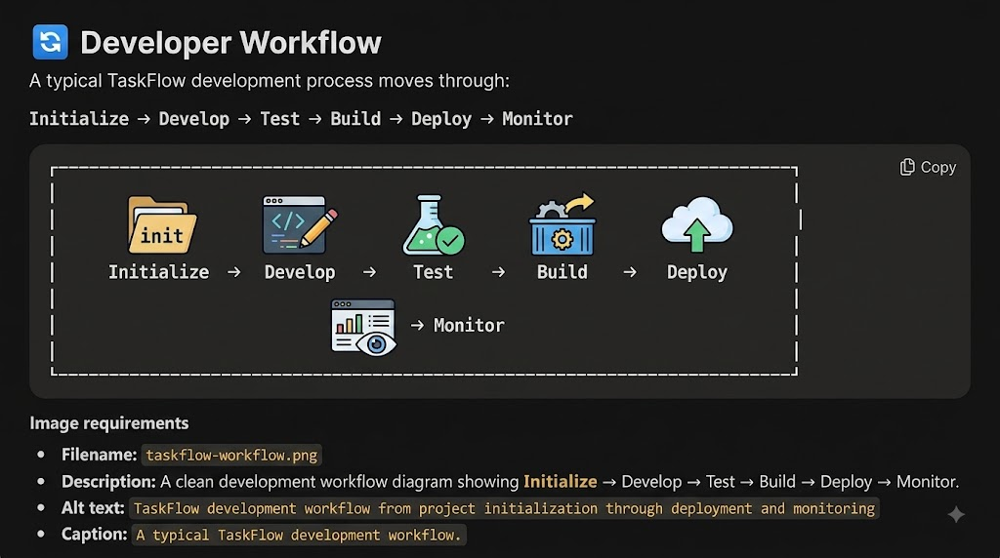
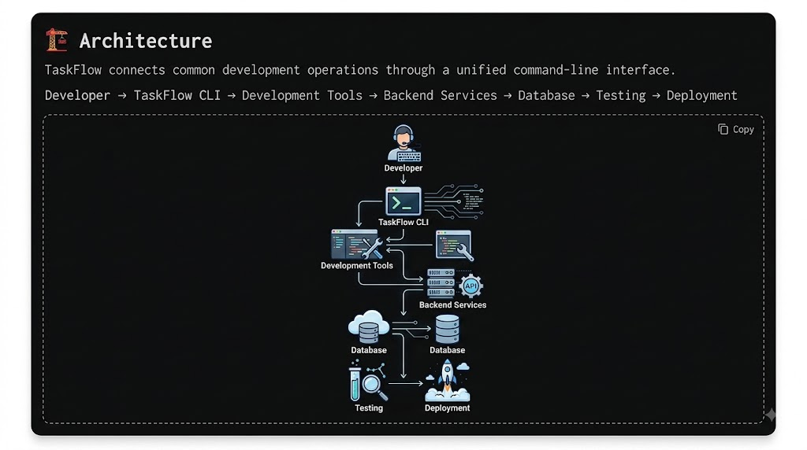
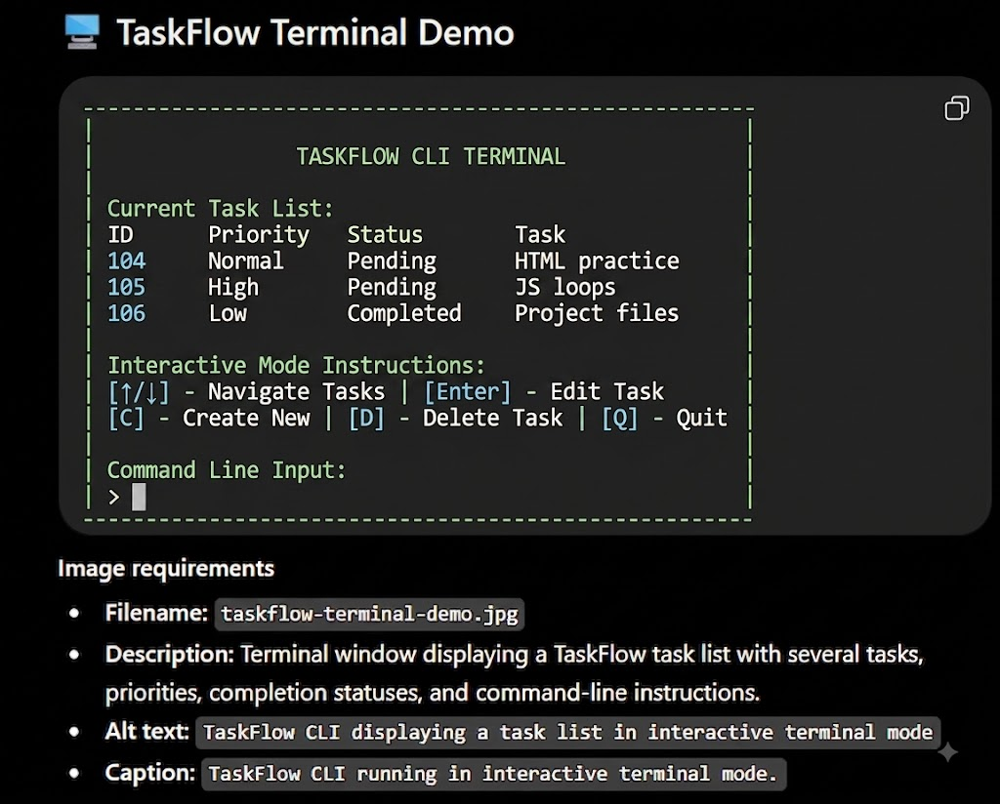

🚀 What Is TaskFlow CLI?
TaskFlow CLI was created for people who spend a significant amount of their day working inside a terminal.
The project provides a simple way to manage tasks without switching repeatedly between a terminal, browser, and separate productivity application.
A task can be created with a short command, assigned a priority, marked as completed, and reviewed later.
The tool is intentionally lightweight and focuses on the essential features required for personal task management.
TaskFlow is currently in public beta. The core task-management functionality is stable, while several advanced features are still being developed.
💡 Why Was TaskFlow Created?
- 🔴 Problem
- Developers often keep temporary task lists in text files, terminal notes, messaging applications, or multiple productivity tools.
- 🟡 Idea
- TaskFlow brings basic task management directly into the command-line environment.
- 🟢 Goal
- The long-term goal is to create a fast, reliable, keyboard-friendly productivity tool that can be used without leaving the developer's workflow.
✨ Key Features
TaskFlow currently provides:
- Create new tasks
- View pending tasks
- Mark tasks as completed
- Assign task priorities
- Filter tasks by priority
- Search existing tasks
- Add notes to tasks
- Export tasks to a text file
- Store tasks locally
- Work without an Internet connection
🔮 Planned Features
- Cloud synchronization
- Team workspaces
- Task sharing
- Calendar integration
- Mobile companion application
📦 Installation
System Requirements
- Windows 11
- macOS 13 or later
- Ubuntu 22.04 or later
- Node.js 20 or later
Installation
The official installation process currently uses npm.
npm install -g taskflow-cli
Verify Installation
After installation:
taskflow --version
Expected output:
TaskFlow CLI v0.8.0
🏁 Getting Started
Create your first task:
taskflow add "Complete HTML practice task"
Expected response:
Task created successfully.
ID: 104
Title: Complete HTML practice task
Priority: Normal
Status: Pending
View your current tasks:
taskflow list
Expected output:
ID Priority Status Task
104 Normal Pending Complete HTML practice task
105 High Pending Review JavaScript loops
106 Low Completed Organize project files
🧰 Common Commands
| Command | Purpose |
|---|---|
taskflow add "Task" |
Creates a new task |
taskflow list |
Displays pending tasks |
taskflow done 104 |
Marks task 104 as completed |
taskflow delete 104 |
Deletes task 104 |
taskflow search "HTML" |
Searches tasks |
taskflow priority 104 high |
Changes task priority |
taskflow help |
Displays available commands |
taskflow --version |
Displays installed version |
⌨️ Keyboard Shortcuts
TaskFlow provides keyboard shortcuts when running in interactive mode.
| Shortcut | Action |
|---|---|
| Ctrl + N | Create a new task |
| Ctrl + F | Search tasks |
| Ctrl + D | Mark selected task as completed |
| Ctrl + P | Change task priority |
| Ctrl + Q | Exit TaskFlow |
| ↑ / ↓ | Move between tasks |
| Enter | Open selected task |
# Keyboard shortcuts are available only when TaskFlow is running in interactive mode. They are designed to allow users to perform common actions without repeatedly typing commands.
📖 Project Terminology
- Task
- A single unit of work that can be tracked from creation to completion.
- Priority
- A value indicating the importance or urgency of a task.
- Workspace
- A collection of tasks belonging to a particular project or working environment.
- Interactive Mode
- A terminal interface where users can navigate and manage tasks using keyboard input.
- Local Storage
- The local data store used by TaskFlow to save tasks on the user's computer.
- Command
- An instruction entered into the terminal that tells TaskFlow to perform an operation.
- Project Repository
- The source-code repository containing the TaskFlow project.
📊 Development Progress
TaskFlow is still under active development.
72% complete
85% complete
25% complete
10% complete
5% complete
🗺️ Project Roadmap
| Feature | Status |
|---|---|
| Core CLI | 🟢 Stable |
| Local task storage | 🟢 Stable |
| Task search | 🟢 Stable |
| Task export | 🟡 Beta |
| Cloud synchronization | 🔵 In Development |
| Team collaboration | 🟣 Planned |
| Mobile application | 🟣 Planned |
🏷️ Release History
v0.8.0 — August 16, 2026
- Interactive terminal mode
- Task search
- Keyboard shortcuts
- Improved task filtering
- Better error messages
v0.7.0 — July 10, 2026
- Task priorities
- Local task storage
- Task export
v0.6.0 — June 2, 2026
- Basic task creation
- Task completion
- Task listing
📈 Project Statistics
Current version: v0.8.0
Contributors: 18
Open issues: 27
Closed issues: 143
Latest release:
First public release:
Supported operating systems: 4
⚙️ Configuration
TaskFlow projects use a configuration file called:
devflow.config.json
Example configuration:
{
"project": "my-project",
"port": 3000,
"environment": "development",
"database": "postgresql",
"testing": true
}
# The configuration file determines how TaskFlow initializes the development environment.
💻 Supported Environments
Operating Systems
- Windows 11
- macOS 13+
- Ubuntu 22.04+
- Other Linux distributions with compatible dependencies
Runtime
Node.js 20 or later
Package Managers
- npm
- pnpm
- yarn
🔄 Developer Workflow
A typical TaskFlow development process moves through:
Initialize → Develop → Test → Build → Deploy → Monitor

🏗️ Architecture
TaskFlow connects common development operations through a unified command-line interface
Developer → TaskFlow CLI → Development Tools → Backend Services → Database → Testing → Deployment

🤝 Contributing
TaskFlow is an open-source project, and contributions are welcome.
Contributors are expected to:
- Be respectful toward other contributors.
- Provide clear descriptions when reporting issues.
- Avoid submitting intentionally harmful or malicious code.
- Test changes before submitting them.
- Keep pull requests focused on a specific change.
- Follow the project's coding and documentation standards.
🛠️ Contribution Workflow
Developers who want to contribute can clone the project repository, create a separate branch for their changes, test their implementation locally, and submit a pull request for review.
Example workflow:
git clone https://github.com/taskflow-cli/taskflow.git
cd taskflow
npm install
npm test
Create a feature branch:
git checkout -b feature/task-search
After making changes:
git add .
git commit -m "Add task search functionality"
git push origin feature/task-search
# The project maintainers review submitted pull requests before merging them into the main branch.
📋 Contribution Requirements
- Node.js 20 or later
- npm 10 or later
- Git
- Basic JavaScript knowledge
- Familiarity with command-line tools
- Ability to write and test basic unit tests
❓ Frequently Asked Questions
Is TaskFlow free?
Yes. TaskFlow is distributed under the MIT License and can be used without a subscription.
Does TaskFlow require an Internet connection?
No. The core task-management features work completely offline
Can I use TaskFlow on Windows?
Yes. Windows 11 is currently supported.
Can I synchronize tasks between computers?
Not yet. Cloud synchronization is currently under development.
Is TaskFlow suitable for teams?
The current release is primarily designed for individual users. Team collaboration is planned for a future release.
Can I contribute to the project?
Yes. Contributions, bug reports, documentation improvements, and feature proposals are welcome.
🗺️ Project Roadmap
Phase 1 — Core CLI
Status: Completed
- Task creation
- Task listing
- Task completion
- Local storage
Phase 2 — Productivity Features
Status: Completed
- Search
- Filtering
- Priorities
- Keyboard shortcuts
Phase 3 — Cloud Features
Status: In Development
- Account system
- Cloud synchronization
- Backup
- Multi-device access
Phase 4 — Collaboration
Status: Planned
- Shared workspaces
- Team members
- Assigned tasks
- Team activity
Phase 5 — Mobile
Status: Planned
- Android application
- iOS application
- Mobile notifications
🖥️ TaskFlow Terminal Demo

⚠️ Important Project Information
TaskFlow CLI is currently a beta project.
Users should expect occasional bugs, changes to command syntax, and incomplete features while the project continues to evolve.
The project does not currently provide:
- Cloud synchronization
- Account management
- Team collaboration
🎧 Contributor Introduction
The TaskFlow team has created a short audio introduction for new contributors.
TaskFlow Introduction
Duration: 45 seconds
The audio explains what TaskFlow is and how new contributors can get started.
🎵 Audio Player
🔗 Project Resources
📚 Official Documentation
https://docs.taskflow.example💻 GitHub Repository
https://github.com/taskflow-cli/taskflow📦 Download TaskFlow v0.8.0
taskflow-0.8.0.zip👥 Maintainers
Ritam Das
Role: Project Maintainer
Open-source maintainer and backend developer responsible for the TaskFlow CLI project.
Sonu
Role: Community Manager
Responsible for documentation, community discussions, and contributor coordination.
📬 Contact
TaskFlow Community
General Email:hello@taskflow.example
Security Email:security@taskflow.example
Documentation:https://docs.taskflow.example
Repository:https://github.com/taskflow-cli/taskflow
⚡ Build better workflows. One task at a time.
TaskFlow CLI is built around a simple idea: your productivity tools should fit into your workflow rather than forcing you to leave it.
The project is still growing, and community contributions will help determine what it becomes next.